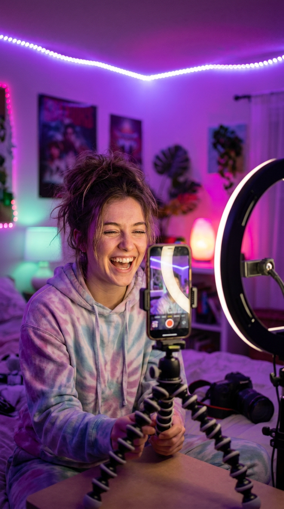

Designa visuellt.
Publicera direkt.
Bygg på en riktig canvas och se exakt vad dina tittare kommer att se.
♥42 890LIKESAV@alexTOP GIFTER+1 NY FÖLJARE
Bygg en TikTok LIVE som känns proffsig från första sekunden.

LIVE@sara Vilken grym stream! 🔥
@leo Nu kör vi!
FUNGERAR MED VERKTYGEN DU REDAN ANVÄNDER
Från första tittaren till sista rapporten. VYRA Premium samlar allt du behöver i ett arbetsflöde — installerat lokalt och synkroniserat säkert.
Bygg på en riktig canvas och se exakt vad dina tittare kommer att se.
Koppla gåvor, följare och chatt till alerts, ljud, TTS och OBS.
Se vilka ögonblick, gåvor och tittare som driver din live framåt.
Öppna VYRA-Setup.exe och följ den vanliga Windows-installationen. Ingen ZIP behöver packas upp.
Börja med en mall eller skapa din egen setup i editorn.
Skriv in ditt TikTok-användarnamn och klistra in overlay-länken i OBS eller LIVE Studio.
Prova VYRA Premium gratis i 3 dagar. Därefter 15 USD per månad med automatisk förnyelse. Säg upp när som helst.
Ladda ner VYRA för Windows ↓Windows 10/11 · vanlig installerare, inte ZIP